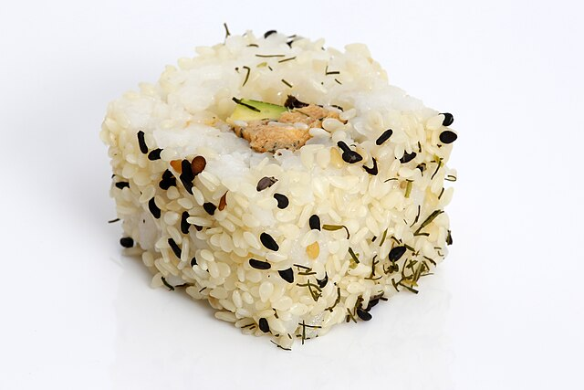

Home
Sushi

Sushi rolls can be filled with any ingredients you choose. Try smoked salmon instead of imitation crabmeat. Serve with teriyaki sauce and wasabi.
Ingredients
- 1 ⅓ cups water
- ⅔ cup uncooked short-grain white rice
- 3 tablespoons rice vinegar
- 3 tablespoons white sugar
- 1 ½ teaspoons salt
- 4 sheets nori seaweed sheets
- ½ pound imitation crabmeat, flaked
Directions
- Gather all ingredients. Preheat the oven to 300 degrees F (150 degrees C).
- Bring water to a boil in a medium pot; stir in rice. Reduce heat to medium-low, cover, and simmer until rice is tender and water has been absorbed, 20 to 25 minutes.
- Mix rice vinegar, sugar, and salt in a small bowl. Gently stir into cooked rice in the pot and set aside.
- Lay nori sheets on a baking sheet.
- Heat nori in the preheated oven until warm, 1 to 2 minutes.